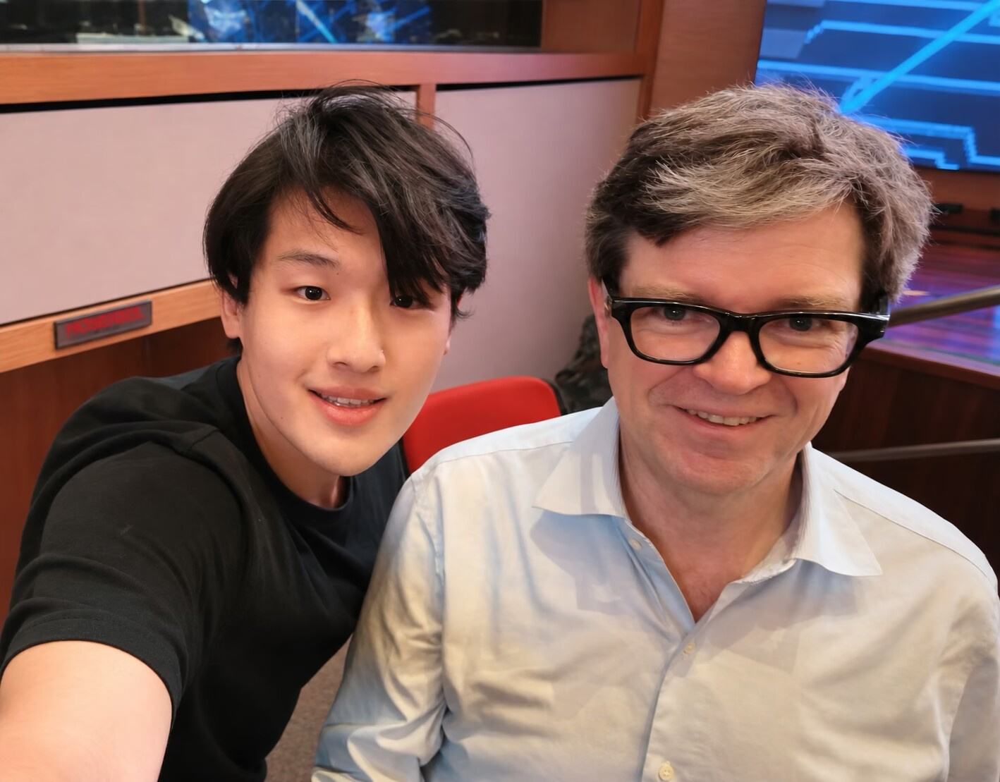
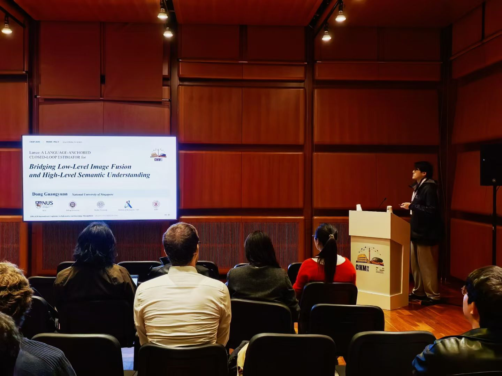

Close the Loop on the Retrievability Gap
预印本，2026第一作者
在图像生成与语义检索之间建立闭环，以概念覆盖反馈训练图像复原模型，保留下游系统能够识别的细粒度信息。通过独立检索器、检测模型和人工评测验证，并将方法拓展至自然图像与病理图像。
欢迎来到我的主页！我是新加坡国立大学的二年级研究生，目前在新加坡国立大学–清华大学 NExT++ 下一代搜索技术联合中心开展科研，有幸得到沈飞老师和蔡达成教授（新加坡国家科学院院士）的指导。此前，我在山东大学信息检索实验室与山东省数字媒体技术重点实验室跟随陈竹敏教授开展研究。我曾在蚂蚁集团技术研究院人工智能实验室和微软亚洲研究院实习，并与北京大学的研究者、慕尼黑工业大学（TUM）的 Björn Schuller 教授（IEEE Fellow）开展合作。
我的研究聚焦多模态大语言模型（MLLMs）、多模态智能与智能体强化学习（Agentic RL）。我从图文检索入手，研究模型如何保留图文匹配所需的细粒度语义，并逐步关注智能体如何获取可靠证据、复用已有经验，以及在长程任务中高效推理。在 NeurIPS、EMNLP、ACM MM、ACM CIKM、IEEE TMM 和 IEEE BIBM 等国际顶级会议和期刊录用论文 14 篇，其中第一作者或通讯作者 8 篇。曾获 NeurIPS 2026 Scholar Financial Award(学者奖学金)。
我相信，让 AI 理解真实的视觉世界，是构建能力更强、应用更广泛的智能体的重要基础。过去和当前的研究主要围绕三个相互关联的方向展开。
长期目标。 我希望构建能够从经验中持续学习、解决复杂开放任务的多模态智能体，进一步探索理解与生成的统一建模、Agentic RL 和可扩展推理，也期待将这些研究延伸到具身交互、医疗和科学发现。
欢迎交流研究想法，也期待探索新的合作。随时联系我！
以下按研究方向列出代表工作，完整论文列表请见 Google Scholar。点击图片可放大查看。
预印本，2026第一作者
在图像生成与语义检索之间建立闭环，以概念覆盖反馈训练图像复原模型，保留下游系统能够识别的细粒度信息。通过独立检索器、检测模型和人工评测验证，并将方法拓展至自然图像与病理图像。

NeurIPS 2026通讯作者 · 项目负责人
通过激活修补定位视觉定位与对象幻觉相关的内部通路，并在五种 VLM 上验证因果干预。在 POPE 对抗测试中，对象幻觉较基线相对减少 40–76%，准确率下降不超过 2 个百分点。

ACM CIKM 2026 · 口头报告第一作者
利用冻结 VLM 提取输入概念，引导图像融合，并核验输出中仍可识别的概念。通过负查询抑制伪匹配，以目标检测和开放词汇定位评估图像质量改善能否带来更好的语义理解。

EMNLP 2026第一作者
将共享情感线索与模态特有信息解耦，通过离散语义基元，将完整模态教师的知识迁移至输入模态缺失的学生模型，提升部分模态可用条件下的情感识别能力。

NeurIPS 2026学生第二作者
结合组织形态先验与平滑流匹配，从 H&E 图像推断空间基因表达。在 HER2ST 上，表达相关系数达到 0.6963；单卡推断耗时由 Stem 的 134 分钟降至 6.6 分钟。

EMNLP 2026第一作者 · 通讯作者
将验证结果、置信度与时间戳随经验一同保存，使反馈持续参与记忆写入、检索与冲突处理。在四个基座模型与四个基准的全部组合中，均取得最高成功率和最少平均动作步数。

EMNLP 2026学生第二作者
在记忆更新决策中嵌入归属水印，即使交互日志缺失，也能在记忆改写或迁移后追溯来源。在 LoCoMo 上保留了基线整体 F1 的 99.6%。

NeurIPS 2026合作作者
在想象轨迹上通过 GRPO 更新 VLA 策略，再以更新后的策略回报训练世界模型。在五个机器人操作仿真环境中，π₀-3B 的平均成功率由 WMPO 的 59.4% 提高至 72.5%。

预印本，2026第一作者
将循环计算与任务进度对齐，并通过隐状态范数锚定稳定长程推理。0.5B 模型训练时最多见过 32 步，在 512 步任务上仍达到 95.5% 的全状态准确率，并支持可学习停机与前缀自蒸馏。

NeurIPS 2026独立通讯作者 · 项目负责人
根据历史交互对下一步动作的影响估计其效用，以步骤为单位裁剪 KV 缓存。在 AgentBench 和 ALFWorld 上，仅用 20% 的缓存即可保留全缓存成功率的 87–89%。

NeurIPS 2026通讯作者 · 项目负责人
根据独立审计反馈学习更新层的选择与步长，通过短程 LoRA 更新实现选择性遗忘，在连续删除请求下兼顾知识保留、对改写查询的鲁棒性与隐私泄漏控制。

IEEE BIBM 2026 · 口头报告第一作者
根据医学问题所属专科与推理类型，为适配器选择共享的秩一分量。在四个中英文医学问答基准上，评估适配效率及所学路由结构的可解释性。
研究生 · 新加坡国立大学
GPA 4.57/5.00
有幸得到沈飞老师和蔡达成教授（新加坡国家科学院院士）的指导。在组内研究多模态语义与检索、闭环图像生成以及语言模型遗忘，相关工作包括 LEDGER 和 MetaForget。
科研实习生 · 蚂蚁集团
共同主导 PAR 的问题定义与方法设计，重点研究循环训练和长度泛化机制。在 TaskKV 中开展 LLM Agent 动作效用建模与 KV-cache 压缩研究。
科研实习生 · MSRA–NUS Summer School
研究长上下文推理与多模态学习，后续合作进一步延伸至 VLM 幻觉、世界模型和缺失模态学习。
与山东省数字媒体技术重点实验室联合培养
本科期间科研经历
在陈竹敏教授指导下，通过联合科研培养开展图文检索与跨模态语义对齐研究。本科毕业设计聚焦小样本细粒度情感分析。
工学学士 · 经济学学士
计算机科学与技术：毕业均分 92.6/100；金融学：毕业均分 90.0/100。
科研合作。 我与慕尼黑工业大学的 Björn Schuller 教授（IEEE Fellow）及其团队合作研究模态缺失下的多模态情感识别，相关成果包括 PriMD（EMNLP 2026）。我也与北京大学的研究者开展智能体记忆方面的合作。
记录学术交流、会议报告，以及与同行相聚的时刻。


报告中，安波教授提出了一个让我印象很深的问题。下游任务尚不明确时，与任务无关的表征应当舍弃哪些细节？选车时，颜色可能无关紧要，但如果要求是一辆红色的车，颜色就成了必要信息。
我对 LeCun 回答的理解是，先通过大规模自监督学习世界模型，再用少量以动作为条件的数据和特定任务的代价函数进行适配。我仍然关心，预测式抽象如何保留尚未遇到的任务可能需要的信息。这也与我在多模态生成和检索中研究的语义保留问题紧密相关。



🙌 6 月，我以志愿者身份参加了北京的 2026 智源大会，并参与 Agent for Science 和多模态 VLM 论坛。
🏅 IEEE ICASSP 杰出审稿人
程序委员会委员&审稿人
学术组织会员。 IEEE、ACM、ACL、CCF
科研之外，我喜欢围棋，目前为业余五段，也喜欢吹萨克斯、游泳、徒步和半程马拉松，平时也喜欢约上朋友一起跑步。本科期间曾任学生会校区负责人，到乡村小学义务支教，并连续三年获得校级一等奖学金。
新冠疫情期间，我通过山东省献血办为重症患者无偿献血 400 mL。